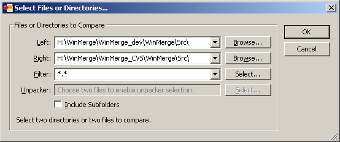
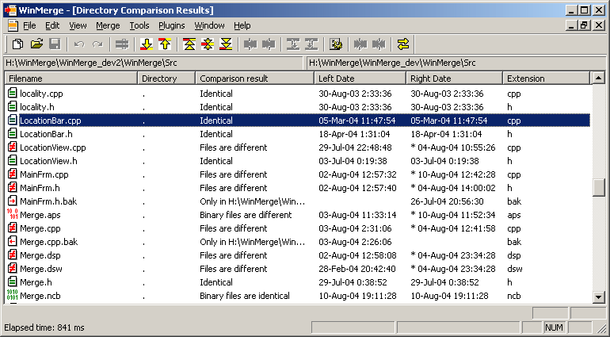
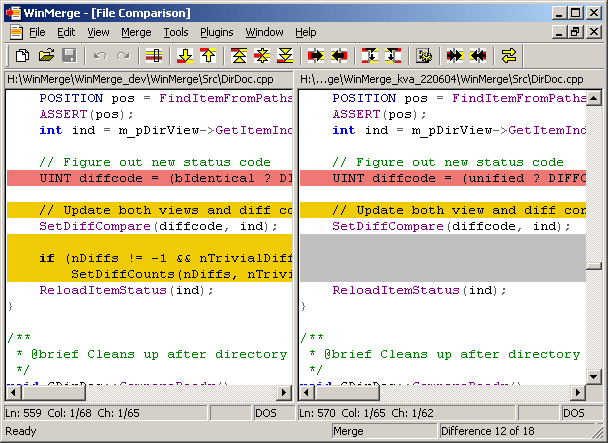

2. Quick start
2.1. Opening files and directories
Start WinMerge and select "" from -menu, click yellow folder icon from toolbar or press Ctrl-O. File/directory selection dialog is shown:

Two topmost fields in Open dialog are used to specify files/directories to compare. Comparison objects can be specified in one of four ways:
-
Enter the path names directly into the edit fields
-
Click the button and use the file chooser to navigate to the desired object
-
Expand the combo box and select a previously entered path (WinMerge remembers the last 20)
-
Drag & drop something into the edit field from Explorer
Directory can be selected from Windows Open dialog (opens when ""-button is selected) by browsing into directory to open and selecting ""-button. It does not require selecting a file. When Filename field in Windows Open dialog contains text "Directory Selection" selecting button selects currently visible directory.
 |
There can be only file & file or directory & directory to open for compare. If there is file & directory or other one of files/directories cannot be found WinMerge disables ""-button in dialog. |
Set of files to compare can be restricted by typing filename extensions wanted to compare into "Filter"-field. Multiple extensions can be given by separating extensions with semicolon or space. For example: *.cpp;*.hpp;*.c;*.h
File filters are much more powerful way to select file/pathnames and extensions. Use "" button next to filters text field to see available filters and to choose filter.
If "Include Subfolders"-checkbox is checked WinMerge compares all subfolders and shows all files and folders it founds in one view. Otherwise only current folder is compared and subfolders shown so user can browse into them.
Unpacker selection is for plugins.
 |
Status of currently selected files or directories is shown with text below fields. If one of paths is invalid this text tells which one it is. |
2.2. Comparing directories

If two directories were selected in Open-dialog directory compare is opened. Directory compare shows list of files and subdirectories it finds. Using -menu items, toolbar items or context menu items files and directories can be managed in many ways.
If file is present in both sides (and is not binary file) it can be opened to file compare. After file compare is closed file's status is updated to directory compare.
2.3. Comparing files

File compare shows two files side by side. Different lines are highlighted with background color. One or more consecutively lines form one difference (or "diff"). WinMerge mostly works with these differences, not separate lines.
With merging commands lines in difference can be copied between sides. Gray (removed/missing) lines can be copied also. When missing lines are copied from side to another matching existing lines are removed. In screenshot above copying three lines in third difference from right to left would mean removing matching three lines from left side.
WinMerge has an simple editor to modify files. Typing, copying, cutting and pasting text works. If Automatic rescan is enabled then WinMerge updates file differences while files are edited. If Automatic rescan is disabled files can be updated selecting from -menu, clicking toolbar button with two yellow arrows or pressing F5 key.